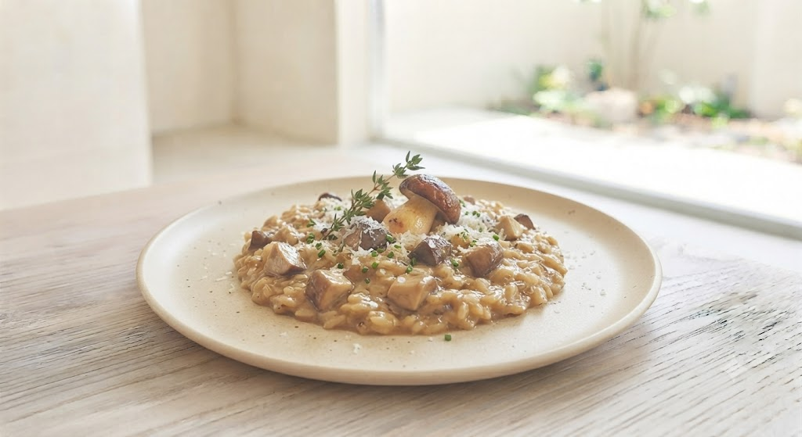
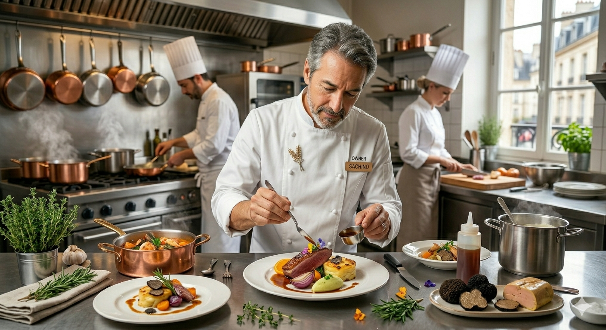

魚系、トマト、クリーム、ミートソース…。その日の気分で選べる「迷う楽しさ」を提供します。
表面はパリッと香ばしく、中はふっくら。独自の調理法が生み出す、ここでしか味わえない新食感。
道産の米、アスパラ、海の幸。素材の旨味を秘伝のチキンブイヨンが最大限に引き出します。
「あったらいいな」のお声にお応えして。現在準備中の新しい楽しみ方をご紹介します。
「100種以上あって迷う!」「2つの味を同時に食べ比べたい」というリクエストに応え、お好みのリゾット2種類をハーフサイズで組み合わせられる贅沢セットを開発中。
お店のアルデンテと秘伝ブイヨンの深みをそのままパック。ご家庭やオフィスでのランチ、遠方のご家族・友人へのギフトとしても喜ばれる冷凍リゾットを展開予定です。
「大盛りがたっぷりで驚きました!野菜の甘みとたらこの塩気が絶妙。待ち時間はありましたが、待つ価値のある一皿です。」
「妻がチーズ苦手なのですが、スタッフさんが親切にメニューを選んでくれました。牛すね肉のリゾット、ホロホロで最高でした!」

Representative
柚木 学
調理師学校を経てシドニーへ。しかし現実は舟洗いの毎日でした。挫折を味わい帰国後、バイト先で気づいた「日本にリゾット専門店がない」という事実。
「パスタやピザのように、もっと気軽に、お腹いっぱいリゾットを食べてほしい」
2006年、その想いだけで立ち上げたGAKUは、今や北海道を代表するリゾット専門店となりました。定食屋のような気軽さと、プロの味。その両立を今も追求し続けています。